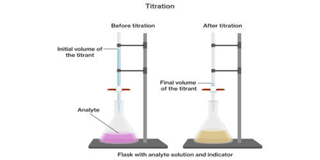
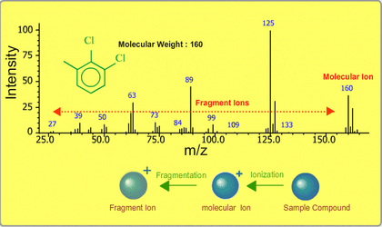

Molecular ion
| Vietnamese | NOUN7. Ion phân tử |
|---|---|
| English | Molecular ion |
| Pronunciation | /məˈlekjələr ˈaɪən/ |
| Word type | noun (as labelled in the PDFs) |
Topic 3 — Meaning (Vietnamese)
Ion được hình thành từ một phân tử mà không mất đi nguyên tử nào
Meaning (English)
An ion formed from a molecule without losing any of its atoms (Ion được hình thành từ một phân tử mà không mất đi nguyên tử nào).
Example
The molecular ion can provide information about molecular mass. (Ion phân tử có thể cung cấp thông tin về phân tử khối.)
Images from the PDFs


